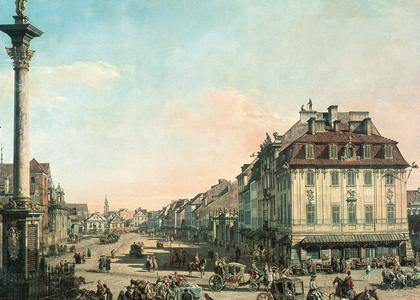
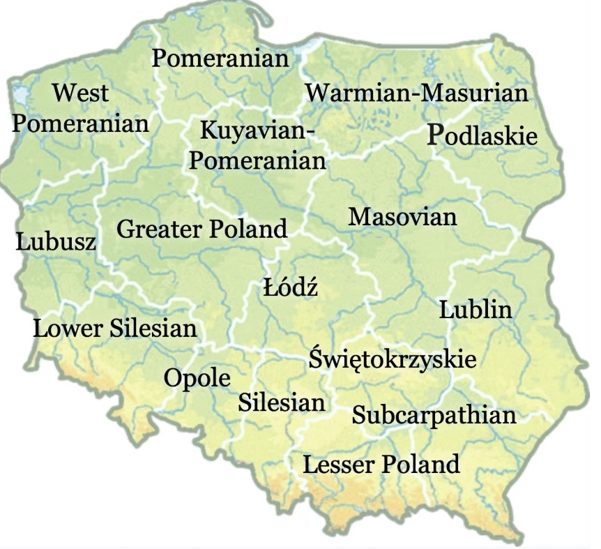

This website is about Poland. If you want to more about this lovely country, what is worth visiting or some traditional cusine you are in the right place :).
| Official name | Republic of Poland |
| Location | Central Europe |
| Area | 312,696 square kilometers |
| Population | 38.5 million people |
| Capital | Warsaw |
| The origin of the name "Poland" derives from the West Slavic tribe of Polans (Polanie), who inhabited the Warta river basin of present-day Greater Poland region starting in the mid-6th century. The origin of the name Polanie itself derives from the Proto-Slavic word pole (field). |  |
| Poland, officially the Republic of Poland is a country located in Central Europe. It is divided into 16 administrative subdivisions, covering an area of 312,696 square kilometres, and has a largely temperate seasonal climate. With a population of nearly 38.5 million people, Poland is the sixth most populous member state of the European Union. Poland's capital and largest metropolis is Warsaw. Other major cities include Kraków, Łódź, Wrocław, Poznań, Gdańsk, and Szczecin. |  |
| Pierogi (singular pieróg) are boiled semicircular dumplings made from a chewy,
wheat-based dough that encases a variety of savoury and sweet feelings. After boiling,
pierogi are often pna-fried in butter until crispy, then drizzled with extra butter.
The most popular fillings are:
|